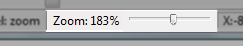

Zoom Slider
The zoom slider is located at the bottom right of the window, immediately to the left of the current mouse coordinates.

The zoom slider displays the current zoom level of the map display. 100% denotes the nominal full size display of the map. A zoom level of 200% displays map objects twice as large as the nominal size, while a zoom level of 50% displays map objects as half the size of the nominal size. The zoom level can be adjusted in the range 25% to 1000%.
You can drag the slider left and right to adjust the zoom level. See Moving around the map for other ways to zoom the map.